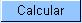

- Mês e Ano da Conta: Mês e ano de referência da conta, apresentado, apenas, para consulta.
- Motivo da Retificação:
Selecione, na lista apresentada ao lado do campo, o motivo da
retificação da conta. Como exemplo, podemos citar alguns
possíveis motivos de retificação:
- Alteração de Categoria;
- Alteração de Vencimento;
- Alteração do Número de Categorias;
- ...
-
Data de Vencimento(*): Informe/atualize a data de vencimento da conta.
- Você
tem
duas opções para informar a data:
- Digitando-a no campo. Neste caso não precisa preocupar-se com a as barras de separação, pois o sistema as coloca automaticamente. A data deve ser informada no formato: DD/MM/AAAA, onde DD é o dia, MM, o mês e AAAA, o ano. O dia e o mês devem ser informados, obrigatoriamente, com dois dígitos e o ano com quatro.
- Pesquisando-a
num calendário. Neste caso, clique no botão
"Calendário"
 , existente ao lado do
campo, que será apresentada uma tela onde você
poderá selecionar uma data no calendário. Clique aqui para obter
instruções mais detalhadas da tela
"Calendário".
, existente ao lado do
campo, que será apresentada uma tela onde você
poderá selecionar uma data no calendário. Clique aqui para obter
instruções mais detalhadas da tela
"Calendário".
- A data de vencimento deve ser superior à data corrente.
- Você
tem
duas opções para informar a data:
- Situação
de Água: Caso seja
necessário,
você poderá modificar a situação da água para a conta. Neste caso você
deverá
selecionar a situação desejada na lista
apresentada ao
lado do campo.
- No caso da situação ser igual a "Ligado", será obrigatório informar o campo "Consumo de Água".
- Consumo
de Água:
Você deve informar a quantidade de água consumida
pelo
usuário no mês/ano de referência da
conta.
- Conforme já vimos anteriormente, este campo será obrigatório, caso a situação de água seja igual a "Ligado".
- Nas demais situações, com exceção para "Ligado" e "Cortado", este campo não deve ser informado. Portanto, nestes casos, o sistema irá protegê-lo contra atualizações.
- Valor de Água: Este campo não pode ser atualizado pelo usuário. Ele é informativo e será atualizado pelo sistema, após você clicar no botão . Contém o valor calculado pelo sistema para o fornecimento de água, de acordo com os parâmentros informados.
- Situação
de Esgoto(*):
Caso seja necessário, você poderá modificar a
situação de esgoto para a conta. Neste caso
você
deverá selecionar a situação desejada
na lista apresentada ao
lado do campo.
- No caso da situação ser igual a "Ligado", será obrigatório informar os campos "Consumo de Esgoto" e "Percentual de Esgoto".
- Consumo
de Esgoto:
Você deve informar o volume de esgoto coletado pelo sistema
de
saneamento, no mês/ano de referência da conta.
- Conforme já vimos anteriormente, este campo será obrigatório, caso a situação de esgoto seja igual a "Ligado".
- Nas demais situações, com exceção para "Ligado", este campo não deve ser informado. Portanto, nestes casos, o sistema irá protegê-lo contra atualizações.
- Percentual
de Esgoto:
Você deve informar o percentual de esgoto coletado pelo
sistema
de saneamento, no mês/ano de referência da conta.
- Conforme já vimos anteriormente, este campo será obrigatório, caso a situação de esgoto seja igual a "Ligado".
- Nas demais situações, com exceção para "Ligado", este campo não deve ser informado. Portanto, nestes casos, o sistema irá protegê-lo contra atualizações.
- Valor de Esgoto Este campo não pode ser atualizado pelo usuário. Ele é informativo e será atualizado pelo sistema, após você clicar no botão . Contém o valor calculado pelo sistema para o volume de esgoto coletado, de acordo com os parâmentros informados.
- Ele é composto por uma tabela com a relação das categorias existentes no imóvel, e as quantidades de economias por categoria.
- Se for necessário,
você
poderá modificar a composição para a
geração da conta. As opções
são:
- Adicionar uma nova categoria
- Para efetuar esta
operação você deverá clicar
no botão
 , que o sistema
irá ativar a tela de popup "Adicionar
Categoria", onde você deverá selecionar
a nova categoria e a quantidade de economias da categoria.
, que o sistema
irá ativar a tela de popup "Adicionar
Categoria", onde você deverá selecionar
a nova categoria e a quantidade de economias da categoria.
- Para efetuar esta
operação você deverá clicar
no botão
- Alterar a quantidade de economias das
categorias
- A alteração da quantidade de economias de uma categoria deverá ser realizada diretamente no campo existente na coluna correspondente da tabela.
- Remover uma categoria
- Para remover uma categoria, do cálculo
da conta, basta clicar no botão "Remover"
 ,
que fica ao lado da categoria, na primeira coluna da tabela.
,
que fica ao lado da categoria, na primeira coluna da tabela. - O sistema irá abrir uma janela de diálogo solicitando a confirmação da remoção. Você deverá "Confirmar" ou "Desistir" da remoção.
- Para remover uma categoria, do cálculo
da conta, basta clicar no botão "Remover"
- Adicionar uma nova categoria
- Este campo é composto por uma tabela
com a relação dos débitos cobrados na
conta, com as
seguintes informações para cada um dos
débitos cobrados na conta:
- Tipo do Débito
- Mês e Ano de Referência do Débito
- Mês e Ano da Cobrança do Débito
- Número da Parcela
- Valor do Débito
- Você tem as
seguintes opções para a
geração dos débitos cobrados na conta:
- Adicionar um débito
- Para efetuar esta
operação você deverá clicar
no botão ,
que o sistema irá ativar a tela de popup "Adicionar
Débito na Conta", onde você
deverá selecionar o
tipo do débito, informar o mês e ano do
débito
e da cobrança, assim como o valor do débito.
- Para efetuar esta
operação você deverá clicar
no botão
- Alterar o valor de um débito
inserido
- A alteração do valor de um débito inserido deverá ser realizada diretamente no campo existente na coluna correspondente da tabela.
- Remover um débito
- Para remover um débito, basta
clicar no botão "Remover",
que fica ao lado do débito, na primeira coluna da
tabela.
- O sistema irá abrir uma janela de diálogo solicitando a confirmação da remoção. Você deverá "Confirmar" ou "Desistir" da remoção.
- Para remover um débito, basta
clicar no botão "Remover"
- Adicionar um débito
- Este campo é composto por uma tabela
com a relação dos créditos inseridos na
conta, com as
seguintes informações para cada um dos créditos inseridos na conta:
- Tipo do Crédito
- Mês e Ano de Referência do Crédito
- Mês e Ano da Cobrança do Crédito
- Valor do Crédito
- Você tem as
seguintes opções para a
geração dos créditos na conta:
- Adicionar um crédito
- Para efetuar esta
operação você deverá clicar
no botão ,
que o sistema irá ativar a tela de popup "Adicionar Credito na Conta", onde você
deverá selecionar o
tipo do crédito, informar o mês e ano de referência do crédito
e da cobrança, assim como o valor do crédito.
- Para efetuar esta
operação você deverá clicar
no botão
- Alterar o valor de um crédito existente
- A alteração do valor de um crédito inserido deverá ser realizada diretamente no campo existente na coluna correspondente da tabela.
- Remover um crédito
- Para remover um crédito, basta
clicar no botão "Remover",
que fica ao lado do crédito, na primeira coluna da
tabela.
- O sistema irá abrir uma janela de diálogo solicitando a confirmação da remoção. Você deverá "Confirmar" ou "Desistir" da remoção.
- Para remover um crédito, basta
clicar no botão "Remover"
- Adicionar um crédito